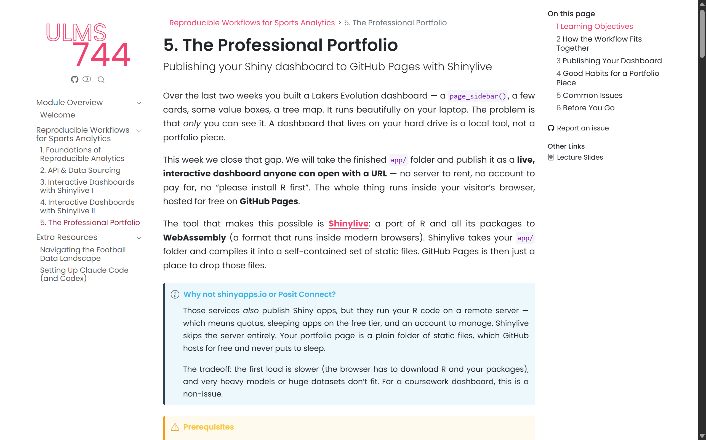

Week 10 Lecture
Dr Shunya Kimura
skimura@liverpool.ac.uk
Sports Analytics in Practice
The Professional Portfolio

Module Outline
W7
Foundations of Reproducible Analytics
W8
API & Data Sourcing
W9
Interactive Dashboards with Shinylive I
W10
Interactive Dashboards with Shinylive II
W11
The Professional Portfolio
Last Week
- Extended the Lakers app with value boxes and a tree map.
- Used
bslibthemes andpage_sidebar()for layout. - Wired Plotly charts into the reactive server.
- Finished a working
app/folder on our laptops.
Quick Recap
Go To Workbook…

Our Plan
- Understand what a portfolio piece really needs.
- Learn what Shinylive is and why it matters.
- Learn what GitHub Pages is and how it serves a site.
- See how the two fit together into one publishing workflow.
The Problem
A Dashboard No One Can See
A local app is a tool for you.
A portfolio piece is a tool others can open.
What “Publishing” Usually Means
- Rent a server.
- Install R on it.
- Keep it running.
- Pay for it.
For a coursework dashboard, this is too much.
What We Want Instead
Free, always on, no server to babysit.
Shinylive
The Short Answer
- Shinylive is a port of R to WebAssembly.
- WebAssembly runs inside modern browsers.
- So R itself can run inside a browser tab.
- Your Shiny app runs there too — no server needed.
WebAssembly in One Line
It lets the browser do what used to need a server.
How Shinylive Changes the Picture
The server disappears.
What shinylive::export() Produces
- A copy of your
app/folder. - A bundle of R + every package compiled to WebAssembly.
- An
index.htmlthat glues it all together.
It is just a folder of static files.
The Tradeoffs
- First load is slower — the browser downloads R.
- Very heavy models or huge data do not fit.
- No access to secrets, databases, or private APIs.
For a coursework dashboard, none of this matters.
GitHub Pages
The Short Answer
- GitHub Pages serves static files from a repo.
- Point it at a folder, and that folder becomes a website.
- Free, HTTPS by default, no account beyond GitHub.
The Mental Model
That is the whole service.
The URL Pattern
USERNAME— your GitHub account.REPO-NAME— the repo you enabled Pages on.- The folder becomes the site root.
Why Static Files Are Enough
- The browser does all the work (thanks to Shinylive).
- GitHub Pages never has to run R.
- It just hands over files over HTTPS.
Putting It Together
The Workflow
One export. One push. One settings toggle.
Why docs/
- GitHub Pages can serve from
/or/docson themainbranch. - Using
/docskeeps source (app/) separate from build output (docs/). - Treat
docs/as generated — never edit by hand.
The Update Loop
The published site never updates on its own.
A Portfolio, Not Just a Link
What Makes It a Portfolio Piece
- A clear
README.mdat the top of the repo. - The live URL linked in the repo’s About sidebar.
- A pinned repo on your GitHub profile.
- Sensible commit messages — they are part of the story.
Why the README Matters
- It is the first thing a recruiter or tutor reads.
- Explains what the dashboard is and who it is for.
- Links to the live URL in one click.
- Signals that you care about how your work is presented.
A Note on Secrets
- Never commit API keys into
app.R. - Never commit private data you do not own.
- If the browser can read it, the world can read it.
Summary
From Script to Artefact
The last step is what turns coursework into evidence.
What You Will Be Able to Say
- “Here is a live dashboard I built — URL.”
- “The code is on GitHub — repo link.”
- “It runs entirely in the browser.”
Practical
Go To Workbook…
Questions?
Shunya Kimura
s.kimura@liverpool.ac.uk